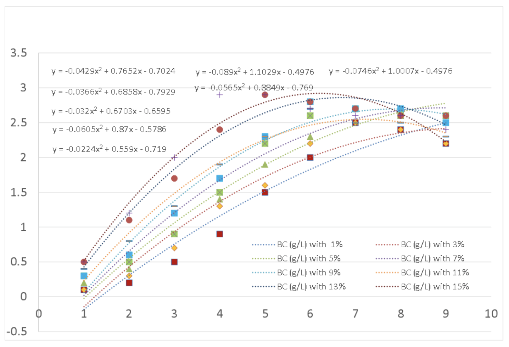
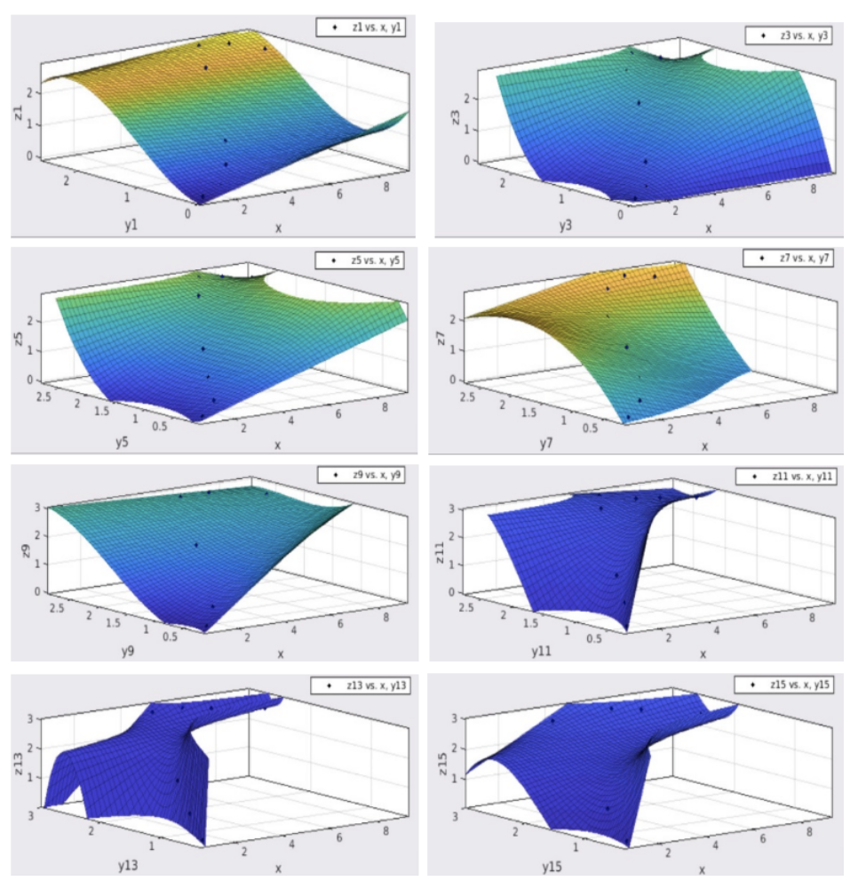
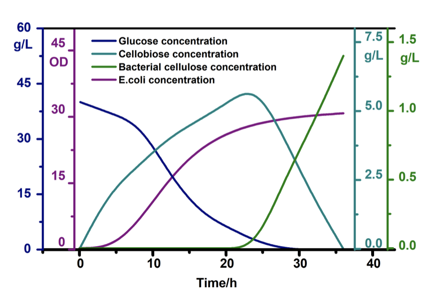

Modelling is a key subproject to help the development of our project.
Particularly with the narrative of optimizing efficient and quality BC production for industry applications, it is important to be able to find out what those optimal conditions are and how we could improve upon them.
This ties in strongly with the wetlab since it directly quantifies our efficiency of production, which is a main portion of our project, and will allow us (if successful) to move forward in our entrepreneurial pursuits.
Furthermore, in a very iterative process, drylab modelling would take information from the wetlab to determine the optimal condition or quantity of one of the involved variables (or use predictive modelling), such as substrate, pH, temperature, etc., and then inform the wetlab of that optimal result to move forward with it in further product development.
Optimizing BC Production Conditions Through Modelling
There are quite a few different models possible that are both present in the literature and performed by iGEM teams to accomplish this goal.
One in depth example of a modelling project we can modify and pursue as a subproject is by JNFLS in 2020.
Ex. JNFLS iGEM 2020
- Modeled the effect of the inoculum size (amount of microorganisms/cells in the fermentation medium) and fermentation time on bacterial cellulose yield from e. Coli
- Assumptions:
- Bacteria growing in an otherwise ideal environment (assuming fixed variables):
- Growth temperature, humidity, and pH value
- Assume polynomial relationship between fermentation time and inoculum size
- Eventually, ignored constants of fitting equation since practically negligible
- This model takes measured results from the wetlab of how the synthesis rate of BC is affected by the inoculation size using varying inoculation amounts ranging from 1-15% over 9 days.
- The data and constants required for this model would be mainly results taken from wetlab experiments
- The results from this experiment were then graphed and the results were fitted cubically to generate final equations illustrating the effect of inoculum size on how much BC is produced in a set amount of time

Figure 1: Concentration of BC over time.
- They then graphed their results on MATLAB to extract further insight

Figure 2: MATLAB graphics produced by JNFLS.
- Conclusions
- For JNFLS, they found “7% initial inoculation amount is the best, because it is not only effective but also economized”
- Pertaining to our project, this can be applied since it works with optimizing conditions, however it does have certain flaws due to its assumptions and would be quite wetlab heavy in terms of work and monitoring since it relies on experimental results.
From the article titled: Linking Engineered Gene Circuit Kinetic Modeling to Cellulose Biosynthesis Prediction in Escherichia coli: Toward Bioprocessing of Microbial Cell Factories
- Developed a comprehensive kinetic modelling technique that takes into account molecular interactions, bacterial environment, and plasmid stability of e. coli (which is usually assumed/ignored in black box approximation models) for the synthesis of BC in e. Coli
- Further related reading:
- Hornung, M.; Ludwig, M.; Gerrard, A. M.; Schmauder, H. P. Optimizing the Production of Bacterial Cellulose in Surface Culture: Evaluation of Product Movement Influences on the Bioreaction (Part 2). Eng. Life Sci. 2006, 6, 546– 551, DOI: 10.1002/elsc.200620163 [Crossref], [CAS], Google Scholar
- Dissanayake, D. M. S. C.; Ismail, F. M. Mathematical Modeling of Bacterial Cellulose Production by Acetobacter Xylinum Using Rotating Biological Fermentor. In Proc. - 27th Eur. Conf. Model. Simulation, ECMS 2013 2013, No. 1989, 459– 465..Google Scholar
Paper titled: Bioreactor Scale-Up and Kinetic Modeling of Lactic Acid and Biomass Production by Enterococcus faecalis SLT13 during Batch Culture on Hydrolyzed Cheese Whey
- Developed a model that provides good predictions for biomass, sugar consumption, and lactic acid production, compared to the experimental data, of the biomass and lactic acid production by Enterococcus faecalis.
- This framework can be applied to our modelling goals as well, particularly for substrate modelling to test which fruit waste substrate is optimal for our BC production (e.g. grapefruit peels, orange peels, etc.)
ECUST China iGEM 2019
- Did quite a bit of optimization work and had an interesting overall product model, which would be helpful to also visualize our competitive advantage and quantify overall material usage over time.

Figure 3: Flowchart of key materials during fermentation.
References:
- Buldum G, Tsipa A, Mantalaris A. Linking engineered gene circuit kinetic modeling to cellulose biosynthesis prediction in escherichia coli: Toward bioprocessing of microbial cell factories. Industrial & Engineering Chemistry Research. 2020;59(10):4659–69.
- Singh A, Walker KT, Ledesma-Amaro R, Ellis T. Engineering bacterial cellulose by synthetic biology. International Journal of Molecular Sciences. 2020;21(23):9185.
- Team:ECUST China/model. [cited 2022Apr13]. Available from: https://2019.igem.org/Team:ECUST_China/Model
- Team:JNFLS/model. [cited 2022Apr13]. Available from: https://2020.igem.org/Team:JNFLS/Model
- Ziadi M, M’Hir S, Aydi A, Hamdi M. Bioreactor scale-up and kinetic modeling of lactic acid and biomass production by enterococcus faecalis SLT13 during batch culture on hydrolyzed cheese whey. Journal of Chemistry. 2020;2020:1–9.